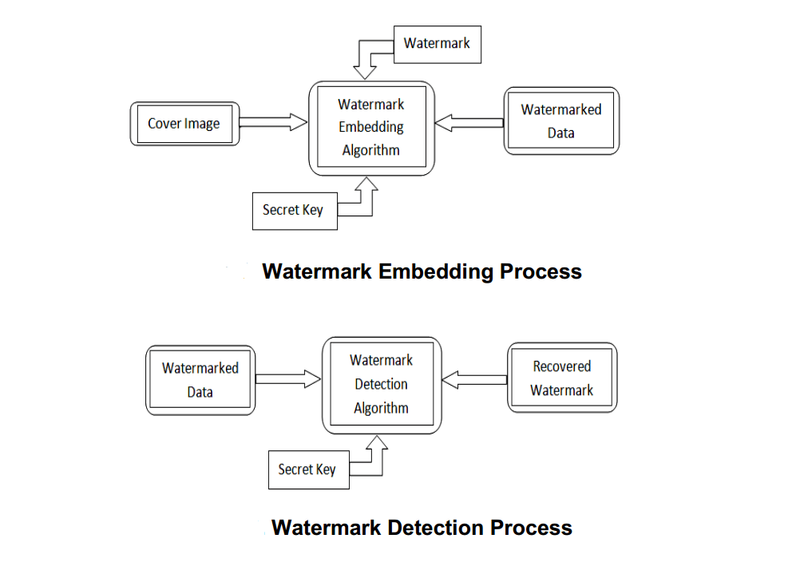
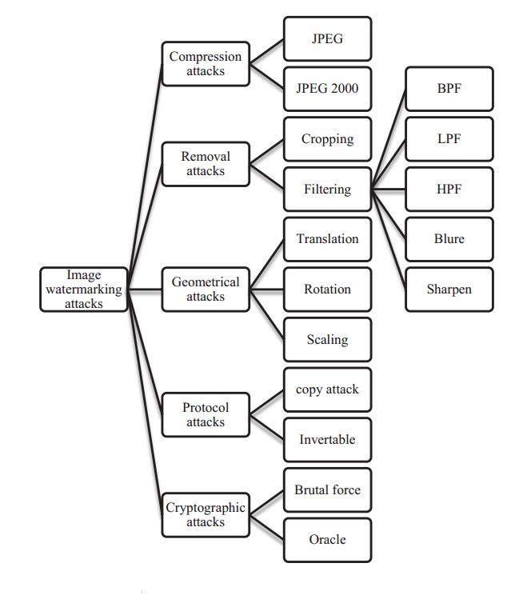
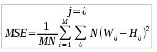
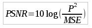
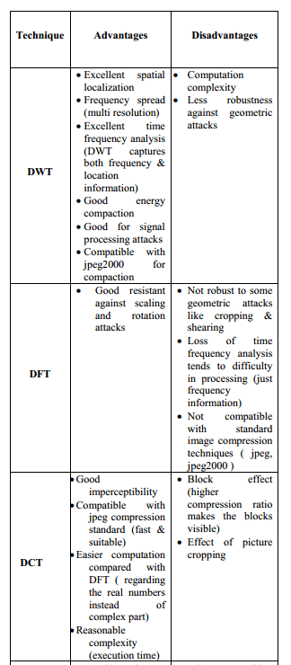

Data publicării: 27.03.2017
Autor articol: Anca Ignat
Securitatea informației multimedia se constituie în ultima perioadă într-un domeniu de interes intens studiat. Marcarea digital (digital watermarking) este domeniul care se ocupă de ascunderea unor informații într-un conținut digital (audio sau video), cu scopul de a proteja informația original de utilizare ilegală sau alterare [1], [2]. Un marcaj digital în procesarea de imagini este o imagine care, de obicei, conține informații legate de drepturile de autor și se supraimpune peste imaginea originală pentru a o eticheta. În cele mai multe din cazuri, marcajul digital nu este vizibil.
Orice tehnică de marcare digitală include doi algoritmi: unul în care se incorporează marcajul în imaginea original, iar al doilea algoritm este cel de extragere a informației ascunse în imaginea marcată. Între etapa de incorporare a marcajul și cea de recuperare a lui, de obicei există și o etapa de distorsionare/atac a imaginii marcate, etapă când e posibil ca informația marcată să fie modificată sau chiar distrusă [3], [4].

Marcajele digitale pot fi împărțite în două categorii:
În funcție de tipul de document ce urmează a fi marcat: de tip text, imagine, audio sau video
-
În funcție de vizibilitate:
marcaj vizibil (informația care marchează este supraimpusă vizibil peste conținutul original)
marcaj invizibil-robust – mesajul nu este vizibil dar este inclus în imaginea originală în așa fel încât să reziste la diversele tipuri de atacuri
marcaj invizibil-fragil – acest tip de mesaj este alterat sau distrus la orice modificare se aplică imaginii marcate.
Pentru proiectarea unui algoritm de marcare trebuie ținut cont de următoarele cerințe:
Imperceptibilitatea – similaritatea perceptuală între imaginea marcată și cea original trebuie avută în vedere atunci când vrem să includem un marcaj care să nu fie detectat de privitor. Calitatea imaginii originale nu trebuie să fie degradată de includerea marcajului
Robustețea – chiar dacă principiile algoritmice de marcare sunt cunoscute, eliminarea marcajului ar trebui să fie imposibilă. Marcarea are trebui să fie robustă la o gamă cât mai mare de atacuri.
Dimensiunea/Capacitatea – se referă la dimensiunea mesajului inclus. Cu cât imaginea original are dimensiune mai mare cu atât mai multă informație poate fi ascunsă. Dimensiunea mesajului ascuns mai poartă numele de încărcare a tehnicii de marcare.
Securitate – marcajul trebuie să reziste atacurilor care țintesc direct la eliminarea informației incluse. Nu ar trebui să fie posibil ca un atactor să poată recupera, elimina sau altera mesajul inclus, fară cunoașterea cheii secrete.
Tipuri de atacuri
Atacurile asupra imaginilor marcate pot fi făcute intenționat sau neintenționat. Există o gamă de atacuri commune: la transmiterea imaginilor, la compresie sau la prelucrarea imaginilor. Vom trece în revistă în continuare câteva dintre aceste tehnici care pot altera/elimina mesajul inclus,
Atacuri de eliminare – urmăresc scoaterea mesajului din imagine sau degradarea lui până la un mesaj inutilizabil, Din clasa atacurilor de eliminare sunt introducerea de zgomot în imagine, egalizarea histogramei, filtrarea.
Atacuri geometrice folosesc transformările geometrice ce se pot aplica imaginilor (scalare, rotire, proiecție) pentru a altera mesajul inclus.
Atacuri de protocol – încearcă să ghicească mesajul și modul de includere pentru a-l putea duplica, sau pentru a modifica informația din mesaj cu date eronate.
Atacuri la compresie – operațiile de schimbare a formatului unei imagini sunt foarte des utilizate, acest lucru însemnând aplicarea unor operații successive de decompresie/compresie cu algoritmi diferiți care duc la modificare/pierderea mesajului din imagine

Tehnici de watermarking
Metodele de marcare a imaginilor sunt de două tipuri: una în care includerea mesajului are loc în domeniul spațial iar altele folosesc transformări frecvențiale ale imaginii înainte de a îngloba mesajul [1], [3], [4], [5].
În domeniul spatial imaginea este reprezentată ca o matrice de pixeli. Imaginea este marcată prin modificarea intensității sau a culorii unor pixeli selectați din imagine. Avantajele marcării în domeniu spatial sunt
Simplitatea
Complexitate de calcul redusă
Timp de calcul redus.
Marcarea în domeniul spațial este mai ușor de realizat iar viteza de calcul este mai rapidă decât tehnicile din domeniul frecvențial dar au marele dezavantaj că sunt puțin robuste la atacuri. Cea mai folosită tehnică de marcare în domeniul spațial este ascunderea informației în bitul cel mai puțin semnificativ (Least Sgnificant Bit). În afară de faptul că sunt fragile la atacuri, un alt dezavantaj este dat de faptul că nu pot fi adaptate pentru a le crește gradul de robustețe.
Tehnicile din domeniul frecvențial întâi aplică o transformare asupra imaginii și apoi marcajul este inclus în imaginea transformată sau în coeficienții de transformare.Apoi se aplică transformata inversă pentru a obține imaginea marcată. Cele mai des folosite operatori de transformare sunt:
Transformata cosinus discretă (DCT – Discrete Cosine Transform)
Transformata wavelet discretă (DWT – Discrete Wavelet Transform)
Transformata Fourier discretă (DFT – Discrete Fourier Transform)
Calitățile tehnicilor de watermarking care folosesc DCT sunt următoarele:
sunt mai bune decât orice algoritm din domeniu spatial, fiind mai robuste la atacuri de genul selecției, zgomotului, filtrării de orice tip
DCT este o transformată reală care se calculează eficient
Transformata wavelet în raport cu DCT oferă o calitate mai bună a imaginii marcate, se calculează o singură dată pentru întreaga imagine (DCT se folosește pe subblocuri), permite o mai bună localizare, este robustă la tehnicile de compresie care se bazează pe transformata wavelet (cum este formatul .jpg), se poate adapta mai usor pentru marcarea perceptuală. Dezavantajul DWT față de DCT este efortul computațional mai ridicat pentru obținerea transformatei wavelet. Transformata Fourier oferă robostețe împotriva atacurilor geometrice: rotații, scalare, selecție, translație. Principalul avantaj al transformatei Fourier este invarianța la rotații și scalare, proprietate care tehnicile din domeniul spația, transformata cosinus si wavelet discrete nu o au. Principalul dezavantaj al transformatei Fourier este că rezultatul este cu valori complexe , eficiența de calcul fiind redusă.
Tehnicile de marcaj digital sunt folosite de cele mai multe ori pentru identificare proprietarului în documentele multimedia, protecția la copiere, monitorizarea transmisiilor video, domeniul medical, amprentare digitală, autentificare și altele.
Performanța algoritmilor de marcare digitală este evaluată de cele mai multe ori, folosind una din următaorele măsuri [5]: MSE (Mean Square Error) sau PSNR (Peak Signal to Noise Ratio) care se calculează utilizând formulele:

unde H este imaginea gazdă de dimensiune M×N iar W este imaginea marcată.;

cu P am notat valoarea maxima din imaginea H.

Referințe bibliografice
- Cox, I., Miller, M., Bloom, J., Fridrich, J., & Kalker, T. (2007). Digital watermarking and steganography.2nd ed., Morgan Kaufmann.
- Averkiou, M. Digital Watermarking. PDF). Source: http://www.academia.edu/download/6338147/10.1.1.163.5770.pdf
- Saini, L. K., & Shrivastava, V. (2014). A survey of digital watermarking techniques and its applications. arXiv preprint arXiv:1407.4735.
- Scholar, P. G. (2014). A survey: digital image watermarking techniques. Int. J. Signal Process. Image Process. Pattern Recognit, 7(6), 111-124.
- Chandrakar, N., & Bagga, J. (2013). Performance comparison of digital Image watermarking techniques: a survey. International Journal of Computer Applications Technology and Research, 2(2), 126-130.